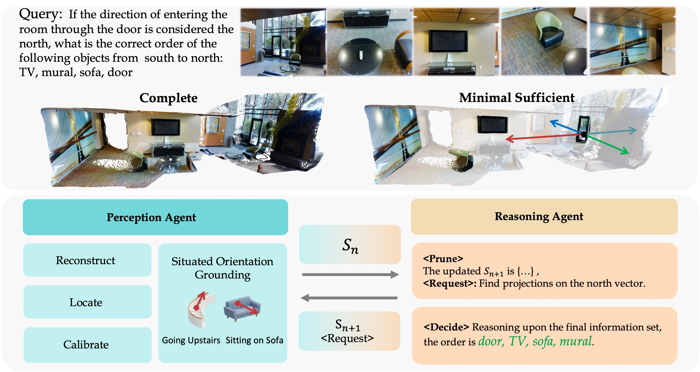
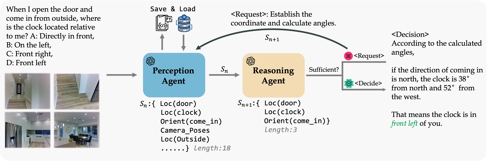

1. Extract spatial evidence
The Perception Agent writes Python that calls expert modules: VGGT for reconstruction, GroundingDINO and SAM2 for localization, and tools for coordinate calibration and numerical computation.
International Conference on Learning Representations · 2026 · pp. 121192–121222
MSSR — Minimal Sufficient Spatial Reasoner — is a zero-shot, training-free dual-agent framework that combines expert 3D perception with iterative information selection.
MSSR is a training-free framework for multi-view spatial reasoning that addresses two challenges: limited 3D perception and distracting information. A Perception Agent uses expert vision tools to extract spatial evidence, including language-conditioned directions through Situated Orientation Grounding (SOG). A Reasoning Agent prunes irrelevant details and requests missing evidence to construct a Minimal Sufficient Set before answering. Experiments on MMSI-Bench and ViewSpatial-Bench demonstrate improved accuracy, while the resulting evidence sets and reasoning traces make the process interpretable.

The Perception Agent writes Python that calls expert modules: VGGT for reconstruction, GroundingDINO and SAM2 for localization, and tools for coordinate calibration and numerical computation.
Situated Orientation Grounding (SOG) overlays candidate directions on images. Coarse-to-fine visual selection maps object-facing and situation-dependent descriptions to 3D vectors.
The Reasoning Agent selects facts needed by its plan, discards irrelevant evidence, and asks the Perception Agent to obtain missing information. Execution state can be reused across rounds.
Final reasoning uses the curated Minimal Sufficient Set with prior context discarded. MSSR approximates this ideal set; it does not prove global minimality for every question.
Table 1 . Accuracy (%) with GPT-4o as the backbone.
| Method | MMSI-Bench | ViewSpatial-Bench |
|---|---|---|
| GPT-4o baseline | 30.3 | 35.0 |
| MSSR | 49.5 | 51.8 |
| Improvement | +19.2 points | +16.8 points |
Historical paper-reported measurements under its evaluation settings. These are not new reproduction results or a current leaderboard ranking. Consult the paper and code for the evaluation protocol.
MSSR's main framework uses pretrained vision and language models without task-specific training. Its contribution is the perception–reasoning workflow and evidence selection. It still requires local vision inference and language-model calls.
The paper's controlled subset analysis normalizes evidence sufficiency before comparing set sizes. Reducing the average evidence count from 17.3 to 5.9 accompanies an accuracy change from 45.8% to 48.3%. This supports pruning for the studied setting, rather than a universal claim that less context is always better. Analysis .
SOG turns direction estimation into selection among 3D arrows rendered in images, then refines the candidates. This supports reference-frame and object-facing questions; it is not designed for sub-degree pose accuracy.
MSSR connects tool-based 3D perception with question-specific evidence selection. Its two agents refine the information used for spatial reasoning, while SOG handles language-conditioned directions. The resulting evidence sets also provide a basis for studying grounded reasoning traces.
Reconstruction and localization errors can propagate through the pipeline. The reasoning stage can still make logical errors or stop early, and iterative model calls add latency. The paper discusses these issues in failure analysis and limitations .

Preferred citation: the ICLR 2026 conference paper. Download BibTeX .
@inproceedings{guo2026pursuing,
author = {Guo, Yejie and Hou, Yunzhong and Ma, Wufei and Tang, Meng and Yang, Ming-Hsuan},
booktitle = {International Conference on Learning Representations},
pages = {121192--121222},
title = {Pursuing Minimal Sufficiency in Spatial Reasoning},
url = {https://proceedings.iclr.cc/paper_files/paper/2026/file/c4ff64d68ba491b9048f00d25690d363-Paper-Conference.pdf},
volume = {2026},
year = {2026}
}